MOVIE
Tap any thumbnail to play in full view.
サムネイルをタップすると映像が再生されます。
DŌJŌ JAPAN のプロモーション映像とトレーナー特集映像をまとめております。
気になるサムネイルをタップしてご覧ください。
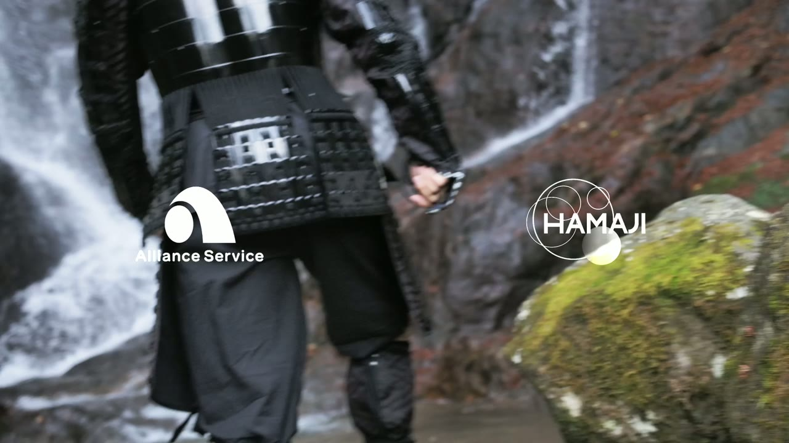
01 / Concept 25 sec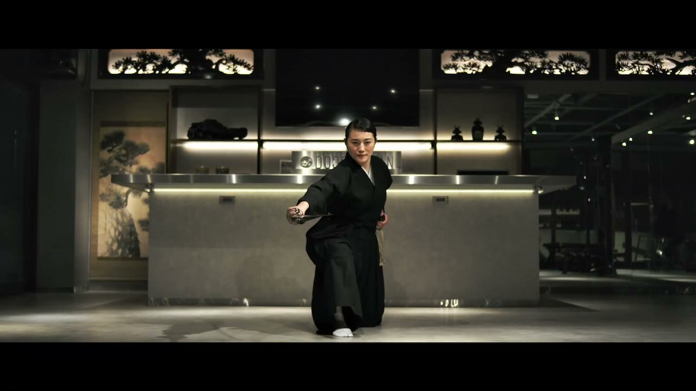
02 / Action Cut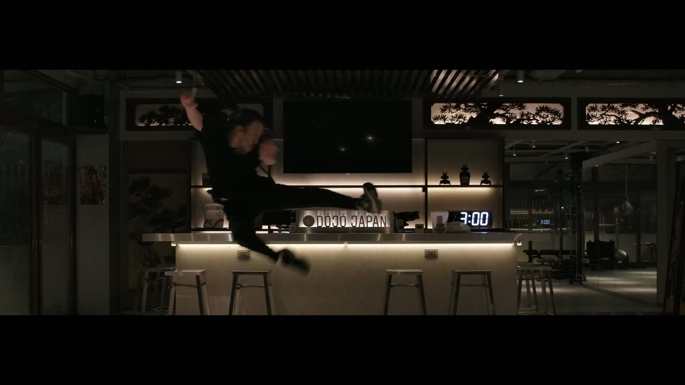
03 / Dragon Kick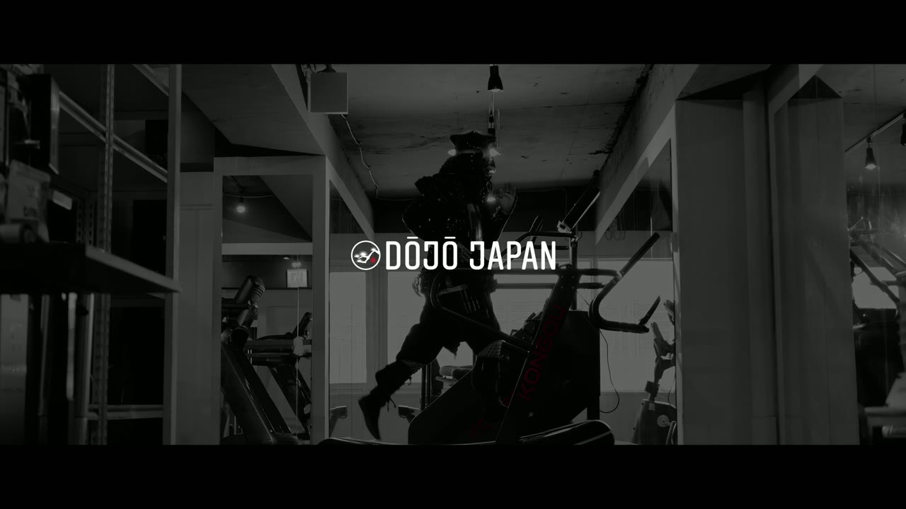
04 / Kongou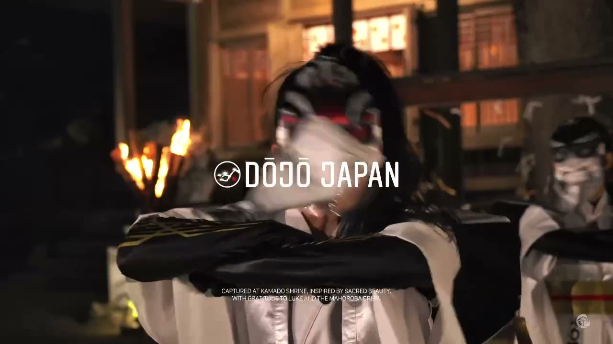
05 / Official PV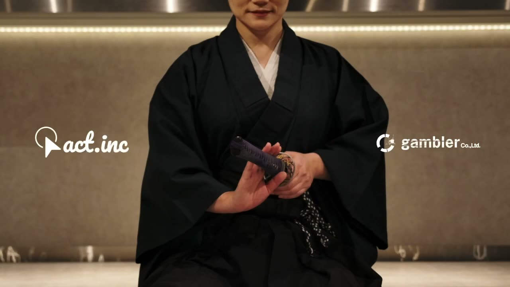
06 / 30 sec Cut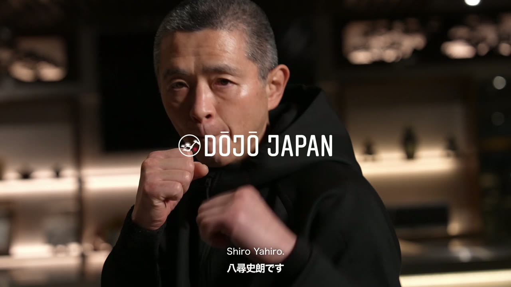
07 / Shiro Yahiro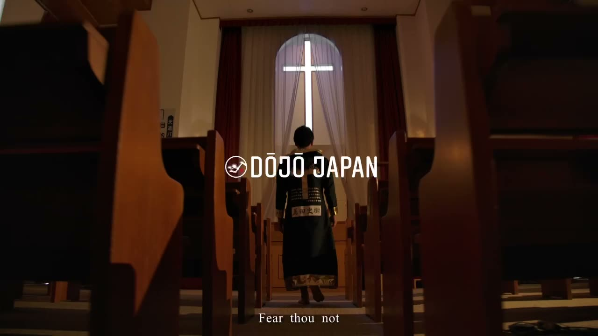
08 / Izaya Matsushima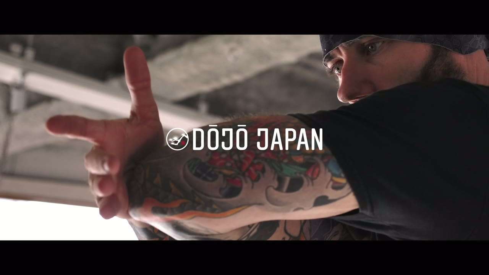
09 / Luke Holloway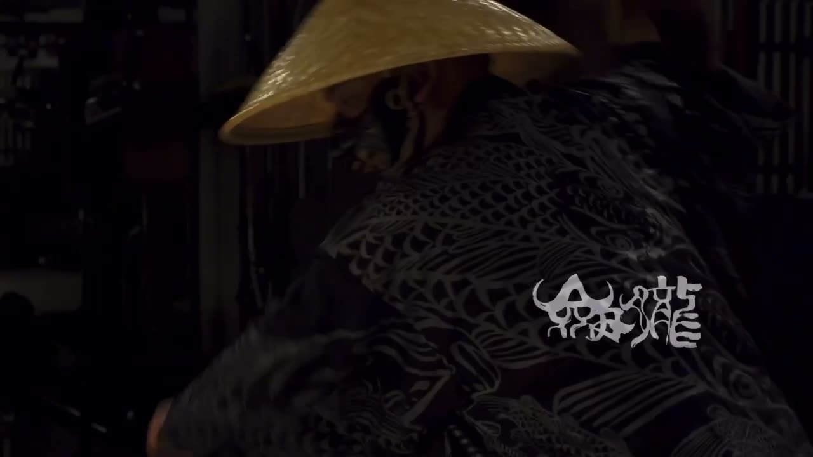
10 / Concept Vol. 2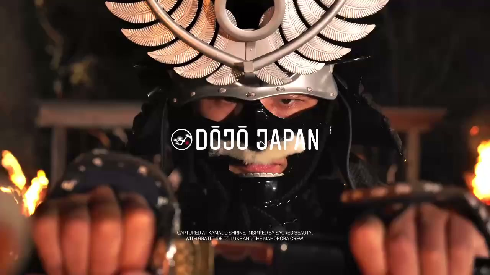
11 / Hero LoopFREE TRIAL · DROP-IN WELCOME
お電話または Instagram DM よりお気軽にお問い合わせください。
Non-Japanese speakers — please contact us via Instagram DM. Our staff will reply in English.